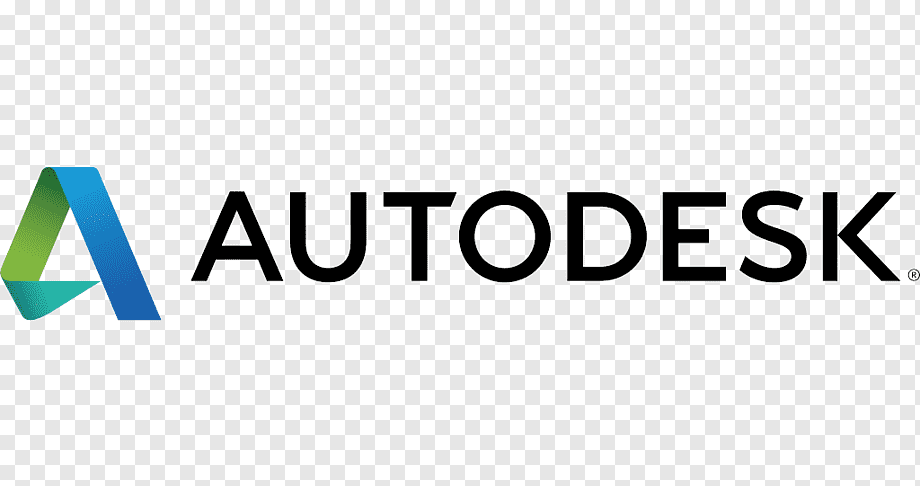

Diseño estructural
Modelos estructurales, aplicación de normativa (NSR-10), verificaciones de capacidad y elaboración de memorias técnicas.
Portafolio profesional para mostrar proyectos de diseño y análisis estructural, flujos BIM y herramientas de software que construyo para automatizar trabajo técnico.
Modelos estructurales, aplicación de normativa (NSR-10), verificaciones de capacidad y elaboración de memorias técnicas.

Flujos BIM con Revit y Navisworks, coordinación interdisciplinaria, control de interferencias y estandarización de entregables.

Desarrollo de scripts y herramientas para ingeniería que permiten automatizar cálculos, generar reportes y extraer información técnica.